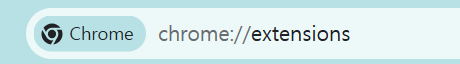
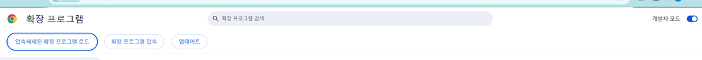
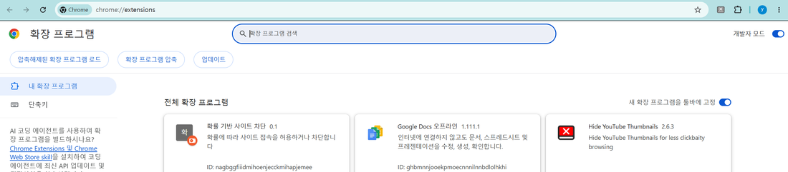

한눈에 보기
어떻게 동작하나요?
기존 차단 앱은 시간이 되면 무조건 막습니다. 이 확장은 막는 대신 확률이라는 마찰을 둡니다.
-
STEP 1
기다릴수록 확률이 오른다
마지막으로 본 뒤 오래 참을수록 통과 확률이 올라갑니다. 초반에는 아주 느리게 오릅니다.
-
STEP 2
시도하면 주사위를 굴린다
그 순간의 확률로 판정합니다. 실패하면 기다린 시간이 0으로 돌아가서, 한 번의 시도가 무겁습니다.
-
STEP 3
시간을 정하고 들어간다
통과하면 하루 남은 한도 안에서 볼 시간을 직접 정합니다. 그 시간이 끝나면 열려 있던 탭까지 다시 차단됩니다.
기능
무엇을 할 수 있나요?
막을 사이트를 직접 고릅니다
설정 화면에서 사이트를 추가하고 지울 수 있습니다. 주소를 통째로 붙여 넣어도
naver.com 같은 모양으로 알아서 다듬습니다. 자주 쓰는 사이트는 버튼 한 번으로 더할 수 있고요.
잠깐 꺼 둘 수도 있습니다
목록에서 빼지 않고 스위치로 끄기만 해도 됩니다. 과제 때문에 잠깐 필요한 사이트를 매번 지웠다 넣을 필요가 없습니다.
사이트마다 따로 셉니다
유튜브에서 실패해도 다른 사이트의 기다린 시간은 그대로입니다. 하루 한도와 확률 곡선도 사이트마다 따로 정할 수 있습니다.
남은 시간이 화면에 떠 있습니다
보는 동안 오른쪽 위에 남은 시간이 계속 표시되고, 마지막 1분에는 빨갛게 바뀝니다. 시간이 끝나면 보고 있던 탭도 새로고침되어 다시 차단 화면으로 돌아갑니다.
하루 한 번은 기다리지 않아도 됩니다
오늘의 찬스는 기다린 시간과 상관없이 하루 한 번 쓸 수 있습니다. 꽝이어도 기다린 시간은 그대로 남습니다.
프로필을 바꿔도 한도는 하나입니다
설정의 공유 코드에 나만 아는 코드를 넣으면, 다른 크롬 프로필이나 다른 컴퓨터에서도 하루 한도와 기록이 하나로 묶입니다. 비밀번호가 아니라 이름표이니 짐작하기 어렵게 지으세요.
설치 방법
5단계로 끝납니다
크롬 웹 스토어를 거치지 않은 확장이라 개발자 모드가 필요합니다. 체크해 두면 이 브라우저가 어디까지 했는지 기억하므로, 중간에 창을 닫아도 됩니다.
-
위의 [확장 프로그램 받기]를 누르면 zip 파일이 내려옵니다. 압축을 풀면
probabilistic-site-blocker폴더가 나옵니다.이 폴더는 그 자리에 그대로 둬야 합니다. 옮기거나 지우면 확장이 멈춥니다. 크롬이 이 폴더를 계속 읽기 때문입니다.
-
크롬 주소창에 직접 입력해야 합니다. 구글에 검색해서는 나오지 않고, 보안 때문에 이 페이지에서 링크로 걸 수도 없습니다. 아래 버튼으로 복사해 붙여 넣으세요.
chrome://extensions
-
화면 오른쪽 위의 개발자 모드를 켜면, 왼쪽 위에 [압축해제된 확장 프로그램을 로드] 버튼이 새로 나타납니다. 그 버튼을 누르세요.

-
폴더 선택 창이 열리면 1단계에서 압축을 푼
probabilistic-site-blocker폴더를 고릅니다. 폴더 안의 파일을 고르는 것이 아니라 폴더 자체를 골라야 합니다. -
목록에 확률 기반 사이트 차단 카드가 생기면 설치가 끝난 겁니다. 설정은 주소창 오른쪽 퍼즐 조각 아이콘 → 확장 이름이나 차단 화면의 [설정] 버튼에서 엽니다. 맨 위 칸에서 막을 사이트를 더하거나 끌 수 있습니다.

새 버전으로 바꿀 때는 GitHub의 Releases에서 받는 편이 좋습니다. 자동 업데이트가 없는 대신, 버전마다 무엇이 바뀌었는지 함께 볼 수 있습니다. 새 폴더를 받아 압축을 푼 뒤 기존 것을 삭제하고 다시 로드하면 됩니다.
내 기록 보기
공유 코드로 기록을 불러옵니다
확장 설정에 넣어 둔 공유 코드를 입력하세요. 한 번 불러오면 이 브라우저가 기억합니다.
| 날짜 | 시도 | 통과 | 이용 시간 |
|---|